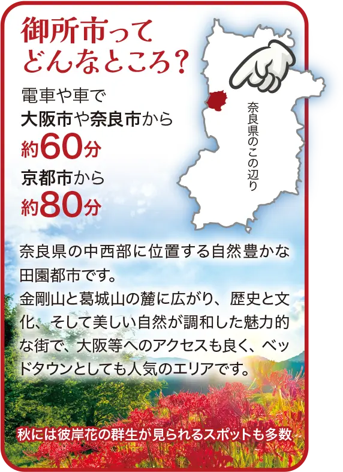

都会に近く、自然豊かな御所市を「歩いて体感」する一日。
四季折々の美しい自然と、暮らしに便利な環境がそろう奈良県御所市。子育て世代にも人気のこの地で「秋の御所縦断ウォークラリー」を開催します。
このイベントは、御所市への移住や定住を検討している方や、御所市内に住んでいるけれど地域のことを広くは知らない方々に、まちの魅力を実際に歩いて体験していただくことを目的としています。地元のお店や観光スポットを巡りながら、地域の暮らしをリアルに感じていただける内容です。

ウォークラリーについて
デジタルマップをもとにチェックポイントを巡る「フォトロゲイニング」形式を採用。時間内に多くのスポットを訪れ、写真を撮ってポイントを集める、ゲーム感覚のウォークラリーです。御所の隠れた魅力を発見しながら、楽しく御所のまちを巡っていただけます。
詳細については、Q&Aもご用意しています→ よくある質問と回答
お問い合わせや事前予約はこちらです→ お問い合わせ


開催概要
- 開催日時：2025年9月21日 (日) 8時30分〜16時
- 集合場所：JR御所駅広場 (8時30分から9時30分まで随時受付)
- ゴール場所：葛城公園広場
3つのエリア
-
初心者・家族向け
御所まちエリア：初めての方でも安心！駅チカで気軽にフォトロゲイニング体験！ -
自然や風景を楽しむ方向け
高野街道エリア：ちょっと足を伸ばして、雄大な風景と御所の魅力発見の旅へ！ -
上級者・挑戦者向け
神話エリア：神話が息づく大自然に抱かれた、心満たされる絶景と達成感！
タイムスケジュール
- 集合・受付8:30～9:30
- スタート9:00～10:00
- 各ポイントチェック10:00～14:00
- ゴール14:00～15:00
- ポイント集計、抽選15:00～16:00
- 解散16:00～
参加特典
参加者には抽選で宿泊付き市民交流会の招待チケットや、参加店舗で使える商品券、温浴施設の利用券など多数ご用意しています。
注意事項：
先着200名を超えた場合は参加をお断りする場合があります。
当日体調不良の方は参加を控えてください。
ルールや特典は事前の予告なく変更する場合があります。
先着200名を超えた場合は参加をお断りする場合があります。
当日体調不良の方は参加を控えてください。
ルールや特典は事前の予告なく変更する場合があります。
移住者の視点で企画した本イベントは、地域の方との交流や、新たな出会いの場としても最適。参加者同士、そして地域住民とのつながりが、御所市での暮らしのイメージをさらに広げてくれるはずです。
自然と人、そして未来の暮らしに出会える特別な一日。ぜひ、御所市で「暮らすように歩く」体験をお楽しみください。